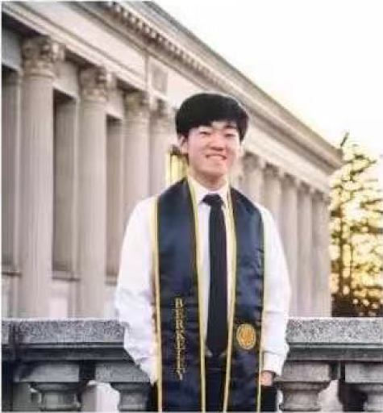
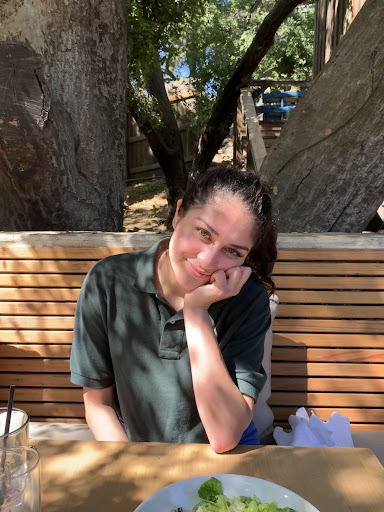

<!DOCTYPE html>
<html lang="en" class="background_img"></html>
<head>
    <meta charset="UTF-8">
    <meta http-equiv="X-UA-Compatible" content="IE=edge">
    <meta name="viewport" content="width=device-width, initial-scale=1.0">
    <title>Avocado Learning</title>
    <link href="avocadostyle.css" type="text/css" rel="stylesheet" media="screen"/>
    <link rel="preconnect" href="https://fonts.googleapis.com">
    <link rel="preconnect" href="https://fonts.gstatic.com" crossorigin>
    <link href="https://fonts.googleapis.com/css2?family=PT+Sans&display=swap" rel="stylesheet">
    
</head>
<body>
    <!-- Nav Bar-->
    <page-header></page-header>

    <!-- Teams-->
    <section id="team_hero_container">
        <div id="team_hero_box">
            <h1 id="team_hero_header">Our Team</h1>
        </div>
    </section>
    
    <section id="team_member_container">
        <h1>Team</h1>
        <div id="teachingteam_box">
            <article class="teammember_profiles">
                <h3 class='team_member_name'>Teaching Leader- Dr. kevin</h3>
                <!--  -->
                <div class="team_member_description">
                    <p>Dr. Kevin has over 15 years of research and development experience in leading Financial/IT companies. He used his extensive experience in software design, including architectural design, object-oriented analysis, design patterns, coding and testing techniques to build large scale applications. Dr. Kevin is currently served as a senior quantitative finance analyst with Bank of America. He enjoys to strive to be a leader that empowers others to success and began to mentor students and young professions since 2015. 
                    </p> 
                    <p>Dr. Kevin teaches computer science core course, and helps others to build programming and data analysis skills. He created a LeetCode course, which has important position in the coding area. Many of his students are now working in leading companies, including Google, Microsoft, Facebook, Amazon, and Goldman Sachs.
                    </p>
                    </div>
            </article>

            <article class="teammember_profiles">
                <h3 class="team_member_name">Teaching Leader- Tony Ng</h3>
                
                <div class="team_member_description">
                    <p>Tony has a master degree from Stanford University and a bachelor degree from Waterloo University in electrical engineering with the highest GPA in both school. 
                    </p> 
                    <p>Tony is an experienced programmer in Python and Java, and is proficient in objective-C in iOS mobile development environment. Tony has many years of experience as a tutor in programming since his high school years, and he knows how to engage his students in classes.   Now as a father of two kids, Tony is a very patient and passionate teacher who understands how to cultivate young kids’ interests by creating a fun learning environment with patience and encouragement that fosters independence, choice and student decision-making.
                    </p> 
                    </div>
            </article>

            <article class="teammember_profiles">
                <h3 class="team_member_name">Mentor- Steven</h3>
                
                <div class="team_member_description">
                    <p> Steven is currently a senior at UC Berkeley studying Computer Science and Data Science, and conducts machine learning research with a startup. He has accepted a software engineering job offer from a FANG company and will begin work this fall.
                    </p> 
                    <p>He began teaching Scratch in college, where he was a teaching assistant for Berkeley’s CS introduction class for 2 semesters. As a teaching assistant, he taught fundamental computer science topics such as abstraction, object-oriented programming, and algorithmic complexity. He hopes to provide younger students with strong fundamentals so they can bring their own projects to life. 
                    </p> 
                </div>
            </article>
            
            <article class="teammember_profiles">
                <h3 class="team_member_name">Mentor- Olivia lara</h3>
                
                <div class="team_member_description">
                    <p>Olivia Lara graduated from Pepperdine University with a major in Computer Science and Digital Arts. She has lots of teaching experience for kids of ages 5-12 with Scratch, Roblox Studio, and Python.</p> 
                    <p>Olivia also has experience working alongside professors and credentialed teachers. Education is something she is very passionate about. She previously held positions as an assistant teacher for summer school, facilitator for STEM enrichment activities, and teacher’s assistant for both college and high school math courses. </p> 
                    <p>The most important thing to know about Olivia is that she loves helping kids learn how cool and fun computer science can be and she hopes she can get the opportunity to work with your kids!</p>
                </div>
            </article>
        </div>
    </section>

    <!-- Nav Bar-->
    <page-footer></page-footer>

    <script src= navbar.js></script>
    <script src= footer.js></script>
</body>    
</html>